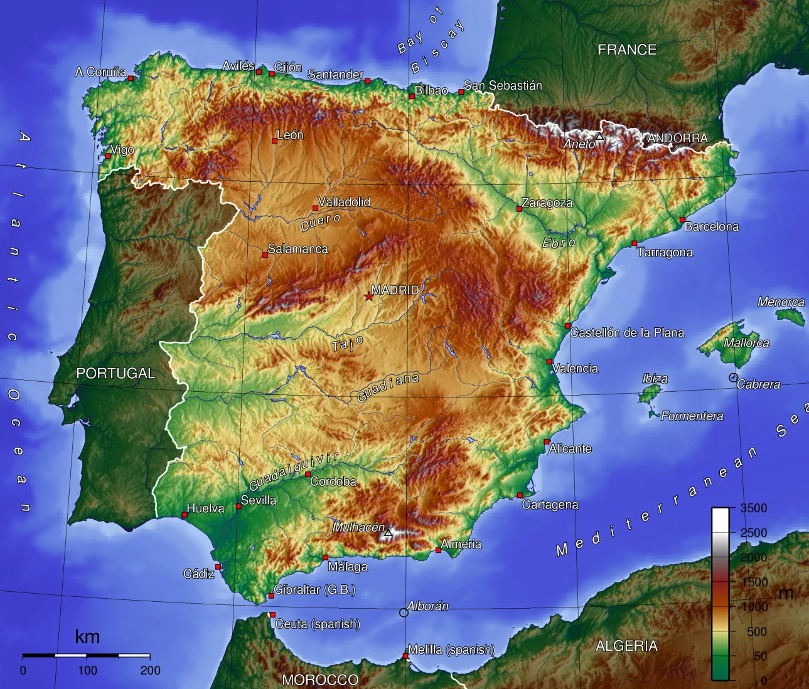

Summary
Spain is a vibrant and culturally rich country known for its lively cities, diverse landscapes, and deep artistic heritage. From the architectural wonders of Barcelona to the royal majesty of Madrid, the beaches of the Costa del Sol, and the historic charm of Andalusia, Spain offers a blend of excitement, relaxation, and history. The capital is Madrid, and the primary language is Spanish, though English is commonly spoken in major tourist destinations. The best time to visit is spring and autumn for comfortable weather and fewer crowds.
Getting around
Transport
Spain’s transportation system is modern and convenient. High-speed AVE trains link major cities like Madrid, Barcelona, Seville, and Valencia, offering fast and comfortable travel. Regional trains and buses reach smaller towns, while metro systems in Madrid, Barcelona, and other cities make urban travel easy. Renting a car can be helpful for exploring rural regions such as Andalusia, Galicia, or the Basque Country. Domestic flights are available for long distances, particularly to the Balearic and Canary Islands.
Safety
Spain is generally safe, with most visits trouble-free. The main concern for travelers is pickpocketing, especially in crowded areas, major attractions, and public transport—Barcelona is particularly known for this. Keep belongings close and secure. At night, most central districts are safe to walk, though it’s wise to avoid poorly lit or isolated areas. Follow local guidelines during festivals, which can draw large crowds.